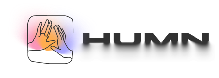

Живое тело
Практики возвращают внимание из головы в ощущения, дыхание, движение и контакт.

Подобрать форматhumn / retreats / practices / community
HUMN собирает ретриты, практики, путешествия и мастеров, которые помогают телу, вниманию и жизни снова стать цельными.
актуальные входы
Главный открытый вход на сайте: глубокая работа с телом, близостью, вниманием и внутренней свободой.
В Tilda сюда ставим точные даты, стоимость и ссылку на актуальную страницу. Если набора сейчас нет, блок меняется на “лист ожидания”, не ломая структуру главной.
что отличает HUMN
Практики возвращают внимание из головы в ощущения, дыхание, движение и контакт.
Форматы строятся вокруг бережности, ясных границ и доверительного поля группы.
Опыт не заканчивается на ретрите: человек уезжает с практиками, состоянием и новым контактом с собой.
Наши мастера
Этот блок должен быть одним из главных на странице: HUMN — это не только страны и даты, а сеть мастеров, через которых происходила работа.
международные тантра-терапевты, ретриты и глубокие тренинги
тантрические кемпы, контакт, групповое поле
чакры, внутренняя сила, трансформация и интеграция
тантра, кашмирский массаж, работа с телом
практики тонкой чувствительности и присутствия
организация пространства, подбор формата и сопровождение
выполненные проекты
Этот блок работает как доказательство опыта. Не просто “мы были в Турции”, а “мы собирали конкретные поля с конкретными ведущими”.
Турция / тантрический кемп / Георгий Голобоков
Хома и Мукто / ретрит / Турция и Азия
СамудроПрем / чакры / интенсивная трансформация
городские практики / Сева Прем / тонкая чувствительность
ресурсы и сообщество
Анонсы, мысли, рекомендации, следы прошедших поездок и живой контакт с полем.
Если человек не понимает, что ему подходит, лучше вести его в диалог, а не бросать в список страниц.
Практики, посты, записи и рекомендации, которые можно использовать между ретритами.
Напиши, если хочешь понять, какой формат HUMN сейчас подходит именно тебе.